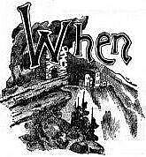
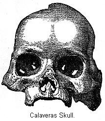
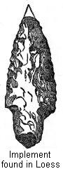
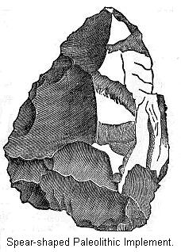
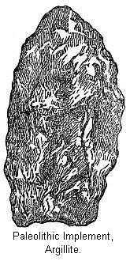

Conflicting accounts of the American Aborigines—Recent discoveries—Climate of California in Tertiary Times—Geological changes near its close—Description of Table Mountain—Results of the discoveries there—The Calaveras skull—Other relics—Discussion of the question—Early Californians Neolithic—Explanation of this—Date of the Pliocene Age—Other discoveries bearing on the Antiquity of man—Dr. Koch's discovery—Discoveries in the Loess of Nebraska—In Greene County, Ill.— In Georgia—Difficulties in detecting a Paleolithic Age in this country—Dr. Abbott's discoveries—Paleolithic Implements of the Delaware—Age of the deposits—The race of Paleolithic man—Ancestors of the Eskimos—Comparison of Paleolithic Age in this country with that in Europe—Eskimos one of the oldest races in the World.
 THE energy and skill of Columbus were crowned with success, and the storm-tossed Atlantic was found to lave the shores of a western continent, reflecting minds in Europe were much interested in the strange stories they heard of the inhabitants of the New World. On the one hand Spanish adventurers told scarcely credited stories of populous cities, temples glittering with gold and silver ornaments, and nations possessed of a barbaric civilization scarcely inferior to their own. On the other hand were accounts of morose savages, cruel and vindictive in nature, depending on fishing and the chase for a livelihood. Nearly four centuries have elapsed since that time. The aboriginal inhabitants have nearly disappeared, leaving their origin and prehistoric life almost as great a riddle to us as it was to the early colonists.
But in endeavoring to unroll the pages of their history, we have chanced upon some strange discoveries. The Aztecs, that people whose culture is to-day such an enigma to our scholars, are known to be a late arrival in the valley of Anahuac. They were preceded in that section by a mysterious people, the Toltecs, whose remains excite our liveliest curiosity, but of which we have yet learned but little. Yucatan is shown to have been for many centuries the home of a people whose advancement equated that of the Aztecs at their palmiest day. Like important discoveries attended the labors of explorers in the North. The entire valley of its great river is known to have been the home of a numerous population, that, from the nature of their remains, we call the Mound-builders. Who these people were, when and whence they came, and whither they went, are questions whose solution is by no means accomplished. Nor are such discoveries the only results. A study of their institutions has done much in revealing the constructions of ancient society, and thereby throwing light on some mysterious chapters of man's existence.
Of late years interest in the antiquity of man in America has been reawaked by the discoveries of human remains in Pliocene deposits in California, and the Glacial gravel of the Delaware at Trenton, New Jersey. Before this it was supposed that we had no authentic instance of human remains in America found under such circumstances that it was necessary to assign to them a profound antiquity. If these latter day discoveries be true, we can not escape the conclusion that man lived in America at as early a date as that indicated by any of the European explorations. Some hold that the proof of his existence here in Pliocene times is far more satisfactory than any evidence of his presence in Europe during this time. There is something fascinating in this belief. If some of the most eminent scientists of America are not mistaken, man lived on our Pacific coast before the great ice-sheets that pulverized the surface of the earth and dispersed life before them came down from the north. He ranged along the western rivers before the volcanic peaks of the Sierras were uplifted, and his old hunting-grounds are to-day buried underneath the greet lava flow which desolated ancient California and Oregon. But this assertion has not been allowed to pass undisputed, nor has it received the assent of all scientists.
We can easily understand why scholars subject all questions relating to the first appearance of man to very careful scrutiny. If a competent geologist should assert that he had found, in undoubted Pliocene formations, bones of some species of animals not hitherto suspected of living at that date, his statement would be accepted as proof of the same. But in the case of man, every circumstance is inquired into. It is but right that the utmost care should be exercised in this direction. But, on the other hand, we are not justified in demanding mathematical demonstration in every case of the accuracy of a reported discovery. Yet such seems to be the position of a portion of the scientific world. For, although they willingly admit that man has lived on the earth for a very long time indeed, they urge all sorts of objections to extending that time into a past geological age.
Accordingly, when Professor Whitney states as the result of many years spent in the investigation of the Tertiary formation of California, that he finds evidence of the existence of man in the Pliocene Age, it is not strange that one part of the scientific world listens incredulously to his statements, and are at once ready to explain away the facts on which he relies. He may, of course, be mistaken, for it is human to err, but his proofs are sufficiently strong to convince some of the best scholars in America. We can do no more than to lay the facts before the reader and let him judge for himself.
We have seen what a genial climate prevailed in Europe during the Tertiary Age. This must also have been true of California. A rich and varied vegetation decked the land. The great trees of California of our day then flourished in Greenland, Iceland, and Western Europe. The cypress of the Southern States was then growing in Alaska and other high northern latitudes. The climate probably passed from a tropical one, in early Tertiary times, to a milder or temperate one in Pliocene times. Amongst the animals inhabiting America were three species of camels. Rhinoceroses, mastodons, and elephants trooped over the land. Tigers and other carnivore prowled in the forests. Herds of horse-like animals, one scarcely distinguishable from our common horse, grazed in the valleys, along with several species of deer. From the presence of the old drainage beds, we know that majestic rivers rolled their watery burden through the land. Such a country might well afford a home for man if he were present.
To understand fully the course of events which now took place we must venture on geological ground. The great Pacific Ocean, lying to the west of America, is constantly exerting a lateral pressure, which during Tertiary times showed its effect in the uplifting of the great mountain ranges of the western coast.2 During late Tertiary times, as a counterpart to the upward movement, a great subsidence commenced in the Pacific region.3 Doubtless many islands, some think an entire continent even, disappeared beneath the waves. The completion of the various mountain ranges left the coast firm and unyielding; hence, as it could not bend before the fiery flood forced upward from below by the downward motion just mentioned, it broke, and the torrent of molten rock leaped out as a lava flow. In consequence of this, near the close of Pliocene times, the surface of California and Oregon, especially the north of California, became buried under the lava and ashes of the most desolating volcanic outbreak that the earth has ever known.
Let us now see what bearing this has on the question of the antiquity of man. Scattered here and there throughout California are numerous masses of basaltic lava, which appear as elevated ridges, the softer strata around having been denuded away. They have received the general name of Table Mountains. They have not only been noted for their picturesque beauty, but miners long since found that the gravels underneath the lava covering were rich in gold. In Tuolumne County the Table Mountain is a flow of lava which originated in lofty volcanoes several miles away.
It extends along the north side of the Stanilaus, which is a small river flowing in a south-westerly course through the county. The mountain is in the form of a ridge about two thousand feet above the present level of the river. At one point the river breaks through this ridge, which has been worn away for a considerable distance. From this point the ridge appears as a continuous mountain, stretching away to the south for a distance of twenty miles, from where it crosses the river. "As seen from a distance the Table Mountain reveals its origin at once, in the contrast between the long, straight line of its upper edge and the broken and curving ones which the eroded hills of the auriferous strata everywhere exhibit. Its dark color and comparative absence of trees and shrubs on its top and sides also indicate very clearly that the materials of which it is composed are very different from that of the surrounding hills."4
This is the celebrated Table Mountain of Tuolumne County. It is simply a vast flow of lava. It must have been a grand sight when this river of fire came rolling down from its volcanic fount. Its present position on top of an elevated ridge is a very singular one. In explanation of that we arrive at some very important conclusions, and we can not fail to be impressed with the fact that countless ages have rolled away since that lava flood poured down the mountain side. "No one can deny that a stream of melted lava, running for forty miles down the slope of the Sierra, must have sought and found a depression or valley in which to flow; for it is impossible that it should have maintained for any distance its position on the crest of a ridge." Lava is about as thick as molten iron, and would as surely seek some valley in which to flow as would so much water. "The valley of the Stanilaus, now two thousand feet deep, could not then have existed; for this flow of lava is clearly seen to have crossed it at one point."
"The whole face of the country must, therefore, have undergone an entire change since the eruption took place, during which this mass of lava was poured out. The valley of the Stanilaus must have then been occupied by a range of mountains. The same is true of the other side, where now is the valley of Wood's Creek; for such ranges must have existed in order to form and wall in the valley in which the current of lava flowed. There has been, therefore, an amount of denudation during the period since this volcanic mass took its position of not less than three or four thousand feet of perpendicular depth, and this surprising series of changes is not peculiar to one locality, but the whole slope of the Sierras, through the gold region, is the scene of similar volcanic outflows and subsequent remodeling of the surface into a new series of reliefs and depressions."5
In order to fully realize the change here spoken of, an imaginary section of Table Mountains is here presented. Here we see the two valleys on the sides, and the mass of lava covering the top of the mountain. The dotted lines represent the position of the old line of hills, which must once have inclosed the valley down which coursed the fiery torrent.
We require to dwell on this, fact before we can fully understand its meaning. The "eternal hills," two and three thousand feet in height, have been completely washed away, and where they stood is now a deep valley. But the old valley, protected by its stony covering, is now a mountain ridge; and this, we are told, is not a solitary instance, but the entire surface of the country has been thus denuded. We stand in awe before the stupendous results, which nature, working through vast cycles of time, has accomplished.
But if this lava flow took place in a pre-existing valley, we ought to find under the rocky covering beds of gravel, rolled stones, and other débris peculiar to a river bed. Such, in fact, we do find extended along directly underneath the lava, about fifteen hundred feet above the general level of the country. These old river gravels are found to be very rich in gold, and miners have tunneled into them in numerous places in search of the valuable metal. In order to determine the geological age of these gravels, and subsequent lava flow, a careful examination of portions of plants and bones of animals found therein has been made. The plants are pronounced by competent authority6 to be Pliocene, totally distinct from any specimens now growing in California. The animal remains are rhinoceroses, camels, and an extinct species of horse. The age of these gravels is, therefore, pronounced to be Pliocene. We would say in this connection that the auriferous gravels of California have been the object of a very careful research by Prof. Whitney. He adds to his conclusions that of another of the State geologists. We need not give in detail his arguments, but he reaches the conclusion that the auriferous gravels of the Pacific slope represent the whole of the Tertiary Age.7
We have seen that in the ancient gravels of European rivers archæologists have found the materials wherewith to build a fascinating story of man's appearance in Quaternary times. We have underneath the lava flow of California the gravel beds of rivers far antedating the gravels of the Somme. It is therefore not a little interesting to learn from Prof. Whitney that he finds many proofs of the existence of man in the gravels of the Pliocene Age in California. Under the solid basalt of Table Mountain have been found many works of men's hands, as well as the celebrated "Calaveras Skull."
This skull was taken from a mining shaft at Altaville, at a depth of one hundred and thirty feet from the surface, beneath seven different strata of lava and gravel. Prof. Whitney was not present when it was found. He, however, made it his business to examine into the facts of the case, and he thus speaks of it: "That the skull was found in these old, intact, cemented gravels has been abundantly proved by evidence that can not be gainsaid." And again: "So far as human and geological testimony can at present be relied on, there is no question but that the skull was found under Table Mountain, and is of the Pliocene Age."8
This would seem to be pretty explicit, but, as we have said before, Prof. Whitney, in his formal report as the State geologist of California, reaches the conclusion that the auriferous gravels of the Pacific are all of the Tertiary Age. It is therefore not a little interesting to learn that numerous instances are recorded of the finding of human remains or the works of man in these gravels. Prof. Whitney mentions twenty such instances.9 Mr. Bancroft furnishes us a list of such discoveries, giving as his authority Mr. C. D. Voy, of the California Geological Survey, of Oakland, California. He states that Mr. Voy personally visited most of the localities where the discoveries were made, and took all possible pains to verify their authenticity, and in many cases obtaining sworn statements from the parties who made them.10
Two stone mortars and spear-heads, six and eight inches long, were found in the gravel under Table Mountain, just mentioned. These relics were found about three hundred feet from the surface. A hundred feet and more of this depth was of solid lava. At another place a stone bead was found three hundred feet from the mouth of the tunnel, under a thick layer of lava. Many other instances might be given of such discoveries, not always under lava coverings, but always in such instances that we are compelled to assign to them an immense antiquity. As, for instance, at San Andreas, according to a sworn statement in Mr. Voy's possession, large stone mortars were taken from a layer of cemented gravel, overlain by one hundred and twenty-five feet of volcanic and gravel materials. Many similar instances are on record, but enough have been mentioned to serve the purpose of the chapter.11
As we have briefly gone over the ground on which the antiquity of man in America is, by some, referred to the Pliocene Age, it is but fair to notice some of the objections that have been raised. It is not necessary to point out that the only questions worthy to be considered are of a scientific nature.
We must deny either the age of the gravels themselves or that the objects of human handiwork were found as claimed, or else that they are of the same age as the gravels. Prof. LeConte thinks, from the nature of the gravels and the peculiar circumstances which surround them, that they are not older than the close of the Pliocene Age. He thinks they, in fact, belong to the transitory period between that age and the Quaternary.12 But as we are considering the question of Pliocene man, it makes but little difference if the gravels do belong to the very close of that period. They may still be called Pliocene.
One great trouble with those remains is that they were not discovered by professed geologists. We have to depend upon the statements of miners. But if their statements can be believed (and why should they not?), there is no doubt about their genuineness. The testimony, as Mr. Whitney says, "all points in one direction, and there has never been any attempt made to pass off on any member of the survey any thing out of keeping, or—so to speak—out of harmony with what has been already found, or might be expected to be found. It has always been the same kind of implements which have been exhibited to us, namely, the coarsest and the least finished, which one would suppose could be made, and still be implements at all."13 This result would hardly be possible, where so many parties are concerned in furnishing the evidence, if the objects were not genuine.14
In opposition to this conclusion it has been urged that the stone mortars, pestles, etc., have become imbedded in the gravel by the action of streams, or slips from the mountain side in modern times, or are the results of interments or mining operations.15 As an illustration of how they might become buried by the action of streams, reference is made to somewhat similar discoveries in the tin-bearing streams of Cornwall (Wales). We know with considerable certainty that at a very early date the Phœnicians worked in the gravels of these streams for tin ores. Implements made use of by them and others—such, for instance, as shovels, mortars, pick-axes, stone bowls, and various dishes—have been found at all depths in this gravel, by more modern miners.16
This may explain the presence, in some instances, of similar remains in California, but it utterly fails to do so, where the remains have been buried underneath a lava flow or a bed of volcanic materials, as is the case in many of the instances we have cited. Manifestly no water has disturbed their strata since the volcanic materials were laid down. Neither can we think of a land-slide carrying these remains into the heart of a mountain, or burying them underneath a hundred feet of lava. The peculiar position in which they were often found is surely lost sight of by those who think they might have been placed there by interment. We can not think of a savage people digging a grave in such a position.
It has been urged with considerable force that these relics have been left behind by ancient miners when they mined for gold. Dr. Wilson is cited as authority for the statement that the Mexicans obtained "silver, lead, and tin from the mines of Tasco and copper was wrought in the mountains of Zacotollan by means of galleries and shafts, opened with persevering toil where the metallic veins were imbedded in the solid rock." Prescott, the historian, also testifies to the same fact.
We need only add to this, that wherever these ancient galleries were opened in the solid rock, they still exist. Schoolcraft mentions finding one two hundred and ten feet deep.17 The chances are not worth considering, that these old mines would be overlooked. If, for instance, the Calaveras skull is that of a prehistoric miner, killed in an old mining gallery only a thousand years or so ago, it is inconceivable that all evidence of this mine should have disappeared. Or, if in one case it should have done so, it would surely have been detected in other instances. The variety and explicitness of the testimony brought forward makes all such supposition improbable.18
It is best, in this matter, to hold the judgment in suspense. We have stated Mr. Whitney's position, and the objections that have been raised to it. The amount of thought bestowed on the antiquity of man will doubtless soon clear up the whole matter. We can not do better than to consider his surroundings, supposing that he was really present. The country must have been very different from the California of to-day. Dr. Cooper says, "The country consisted of peninsulas and islands, like those of the present East Indies; resembling them also in climate and productions."19 The probabilities are that to the west and southwest of California, instead of watery expanse of the Pacific, only broken here and there by an ever-verdant islet, there was either a continental expanse of land or, at any rate, a vast archipelago. We know that over a large part of the Northern Pacific area the land has sunk not less than six thousand feet since late Tertiary times.20
We are certain the ocean area must have presented a vastly different aspect before that depression commenced. It is not unreasonable to suppose that communication between North America and Asia was much easier than in subsequent epochs. It might have been an easy matter for man to pass back and forth without losing sight of land. It is therefore reasonable to suppose that if Pliocene man was in existence, he would have occupied both sides of the Pacific at this early time.21 These last conclusions are very important ones to reach, and as there is reasonable foundation for them, we must bear them in mind in the subsequent pages.
It will be remembered that the races of men who inhabited Europe in the Paleolithic Age had only very rudely formed, unpolished implements. It is not until we arrive at the Neolithic stage of culture that we meet with specimens of polished stone implements. To judge from the specimens of early Californian art, the beautifully polished pestles, beads, plummets or sinkers, spear-heads, etc., Pliocene man in California must have been in the Neolithic stage of culture. Though they were not acquainted with the potter's art, yet from their skill in working vessels of stone, they had undoubtedly passed entirely through Savagism, and had entered the confines of Barbarism,22 as far advanced, in fact, as many of the Indian tribes the Spaniards found in possession of the country.
It must be confessed this seems very singular. It is this statement that causes many to shut their eyes to what would be otherwise at once admitted and refuse to believe the genuineness of the discovery. If the implements brought to light had been of the rude River Drift type—celts but little removed from nodules of flint—scholars would not be so cautious about accepting them. But when we learn they are Neolithic, we at once see why they hesitate, and ask for more conclusive proofs; yet this is no reason to disregard the discoveries. They may be a great surprise, they may be an unwelcome discovery to the holder of some theories, yet the only question is, whether they are true or not, and if true, theories must be modified to fit the facts. Prof. Putnam thus speaks, in reference to them: "As the archæologist has no right to be governed by any pre-conceived theories, but must take the facts as he finds them, it is impossible for him to do otherwise than accept the deductions of so careful and eminent a geologist as Prof. Whitney, and draw his conclusions accordingly, notwithstanding the fact that this Pliocene man was, to judge by his works in stone and shell, as far advanced as his descendants were at the time of the discovery of California by the Spaniards."23
Perhaps a partial explanation of this matter may be found when we consider all the circumstances of the case. The origin of man is generally assigned to some tropical country. Sir John Lubbock thus speaks of it: "Our nearest relatives in the animal kingdom are confined to hot, almost tropical climates; and it is in such countries that we are, perhaps, most likely to find the earliest traces of the human race."24 This is also the opinion of other eminent scholars. M. Quatrefages thinks that man probably originated in Asia. He points out, however, that, during Tertiary times, the climate was much milder, and man might have originated in Northern Asia.25 Now, if it be true that a great mass of land has disappeared beneath the waves of the Pacific, why may we not suppose that, if this sunken land was not the original home of man, it was at a very early time inhabited by him; that here he passed through his experience in savagism?26 We know how suited the islands of the Pacific are to the needs of a savage people; and we must not lose sight of the probable ease with which they could reach the coast of California—and also of what Dr. Cooper has told us of the climate and geographical surroundings of California at that early time. So it may not be unreasonable to suppose that man reached California long ages before he wandered into Europe, and so reached the Neolithic stage of culture much earlier than he did in other parts of the world.27
It might be objected, that if a people in the Neolithic stage of culture lived in California in the Pliocene Age, they ought to have reached a very high stage of culture indeed when the Spaniards invaded the country. This is what we would expect had they been left to develop themselves. The great geographical changes that took place near the close of the Pliocene would cut off the primitive Californians from the Asiatics. Not only was the land connection—if it indeed existed—now destroyed, but causes were changing the climate. Ice and snow drove from the north life of both animals and plants, and for an entire geological period communications with Asia by way of the north must have been very difficult, if not cut off altogether. Who can tell what changes now came to the Asiatic branch of these people? We are but too familiar with the fact that nations and races sicken and die: many examples could be given. The natives of the Sandwich Islands seem doomed to extinction. In a few centuries, the Indians of America will live only in tradition and song.
Such may have been the fate of the early inhabitants of the Pacific continent: certainly it would not be surprising, if the immense climatic and geographical changes which then took place would produce that result. Or it may be that but a scanty remnant lived on, absorbed by more vigorous, though less highly cultivated stocks of the same people, whose homes had been on the main-land of Asia—and the remnant left along the Pacific coast must have lived on under vastly different circumstance. The interior of North America was largely a dreary expanse of ice and snow down to the 39th parallel of latitude. It is quite true, this great glacier did not reach the Pacific Slope; but it must have exerted a powerful influence on the climate: and the evidence points, that the Sierra Nevada were occupied by local glaciers which reached down into the fertile expanse of the plains.
This was certainly a far different climate, and a far different country, than that which sustained a vegetation of a tropical growth. It may well be that the people should, as a result of their changed conditions, have deteriorated in culture; or, at any rate, their progress toward civilization may have been stopped, and many thousands of years may have passed with no perceptible improvement. It may be objected, that man will improve under any state of existence, give him time enough. This is, doubtless, in the main true. But a race may early reach its limit of culture; in which case, as a race, it will not improve: we may do much with the individual, but nothing, or but very little, for the race.
In these considerations which have been advanced we may find some reason for the early appearance of Neolithic man, as well as the fact that he advanced no farther in culture. But whether man first arrived in California in Pliocene times or not, he continued to inhabit the land to the present day. He would, however, be exposed to assault after assault from invading tribes. We do not wish to examine the question of the origin of the native Americans. It is held, by the best authorities, that at least a portion of them came from Asia, using the Kurile Islands as a stepping stone. Reaching the main-land of America, and passing down the coast, they would, sooner or later, reach the Valley of the Columbia—which has been characterized as the most extraordinary region on the face of the earth in the variety and amount of subsistence it afforded to tribes destitute of a knowledge of agriculture. At certain seasons of the year the rivers are crowded with fish, and they are then caught with the greatest ease. As a mixture of forest and prairie, the country is an excellent one for game. A species of bread-root grew on the prairies; and, in the Summer, there was a profusion of berries. To these advantages must be added that of a mild and equable climate.28
These combined advantages would make this valley one of the centers of population, from whence would issue successive bands of invading people. A portion of these, passing over into California, would come in contact with the descendants of Pliocene man. The result would be, that the primitive inhabitants, unable to escape to the west, would come in contact with wave after wave of invading tribes. This is not altogether theory. All inquirers into the customs, arts, and languages of the primitive Californians have been struck with the remarkable commingling of the same. We are driven to the conclusion that here has been the meeting ground of many distinct tribes and nations. "From such a mixture, and over-population of the most desirable portions of the country, would naturally result the formation of the hundreds of petty tribes that existed in both Upper and Lower California when first known to the Spaniards."29
In view of these facts, it is not strange that no advance in culture is noticeable; and the grounds just mentioned may go far to explain why we catch sight, here and there, of bits of customs, habits, and manners of life which strangely remind us of widely distant people—though it will not explain the presence of words of Malay or Chinese origin which are claimed to exist.30 What is known as the Eskimo trace is quite marked in the physical characters and in the arts of the Californians.31 It is, probably, the continuance of the type of the primitive American race.
It would naturally be interesting to know whether any date can be given for the Pliocene Age, and so give us some ideas as to the antiquity of man, if he were really here during that epoch. This, however, is one of the most difficult questions to answer, and in the present state of our knowledge incapable of solution. Approximations have, of course, been made, and, as might be expected, vary greatly in results. When it was acknowledged on all hands that on geological grounds the age of the earth was certainly very great, many times the few thousand years hitherto relied on, it is not strange that popular thought swung to the other extreme, and hundreds of millions of years were thought necessary to explain the series of changes which the geologists unfolded. This demand for a greatly extended time was strengthened when the law of the gradual evolution of life was expounded by the modern school of naturalists, and as great a lapse of time as five hundred millions of years was not deemed an extravagant estimate. Sir William Thompson has, however, demonstrated that the time that has elapsed since the crust of the earth became solidified can not be far from one hundred millions of years, and consequently we know the time since the appearance of life must be greatly less than that number of years.
Attempts have been made to estimate the length of time required to form the sedimentary crust of the earth. The results are so divergent on this point that it is best not to adopt any standard at present. Our views on this matter are also dependent on the time that has elapsed since the close of the Glacial Age, which, as we have seen, is not yet a settled point. If it be true that the islands of the Pacific commenced to sink during late Tertiary times, then we have a measure of that time in the growth of coral, which has required at least four hundred thousand years to form reefs the thickness of some that are known to exist.32
But here, again, it seems we are not certain when this depression commenced.33 In a previous chapter we have gone over the Glacial Age, and have seen when, according to Mr. Croll's theory, it commenced. This was probably not far from the close of the Pliocene Age. We might as well leave the matter here. There are so many elements of uncertainty that it is doubtful if we will ever be able to assign satisfactory dates to the epoch.34
In bringing to a conclusion this somewhat extended notice of early man in California we have to admit that much of it is speculative; still it is an endeavor to explain known facts. The main statement is that man lived in California in the Pliocene Age, in the Neolithic stage of culture. Whether the arguments adduced in support of this statement are sufficient to prove its accuracy must be left to the mature judgment of the scientific world. There is no question but that the climate and geography, the fauna and the flora, were then greatly different from those of the present. Starting with these known facts, so strange and fascinating, it need occasion no surprise, if the pen of the enthusiastic explorer depict a scene wherein facts and fancy are united.
In this case truth is certainly stranger than fiction, and when, in imagination, we see the great Pacific archipelago emerge from the waves, and, in place of the long swell of the ocean, we picture the pleasing scenes of tropic lands, the strange floral growth of a past geological age, the animal forms which have since disappeared, with man already well advanced in culture: when we recall all this, and picture forth the surprising changes which then took place, the slowly subsiding land, the encroaching waters, and the resultant watery waste, with here and there a coral-girt island, the great volcanic uplift on the main-land, the flaming rivers of molten lava, which come pouring forth, followed by the night of cold, ice, and snow: when we consider these, and the great lapse of time necessary for their accomplishment, how powerless are mere words to set forth the grandeur and the resistless sweep of nature's laws, and to paint the insignificance and trifling nature of man and his works!
The discoveries in California are not the only instances of the relics of man and his works found under such circumstances that they are relied on by some to prove the great age of man in America. But on account of the rarity of these finds, and the contradictory statements and opinions respecting them, the scientific world has until lately regarded with some distrust the assertion of a great antiquity for man on this continent; but a review of the evidence on this point, and especially of Dr. Abbott's discoveries in New Jersey, must impress on all the conclusion that tribes of men were living here at the close of the Glacial Age, and probably long before that time.
It need occasion no surprise to learn that several of the discoveries of former years, relied on in this connection, have since been shown to be unreliable. They have not been able to stand a careful examination at the hands of later scholars. They were made when European savants were first communicating to the world the results of the explorations of the river gravels and caves of that country. The antiquity of man being amply proven there, may afford some explanation why more discriminating care was not employed. Of this nature were some of the discoveries in the valley of the Mississippi; such, for instance, as the portion of the human skeleton found mingled with the bones of extinct animals a few miles below Natchez, and the deeply buried skeleton at New Orleans, in both of which cases a simple explanation is at hand without the necessity of supposing a great flight of years.
Some of these discoveries yet remain an unsettled point. Such is the discovery of flint arrow-heads in connection with the bones of a mastodon found in Missouri. Dr. Koch, who made the discovery, draws from the facts of the case such a suggestive picture that we will give his own words. After describing where found, he says: "The greater portion of these bones had been more or less burned by fire. The fire had extended but a few feet beyond the space occupied by the animal before its destruction, and there was more than sufficient evidence that the fire had not been an accidental one, but, on the contrary, that it had been kindled by human agency, and, according to all appearance, with the design of killing the huge creature which had been found mired in the mud, and in an entirely helpless condition. All the bones which had not been burned by the fire had kept their original position, standing upright and apparently quite undisturbed in the clay, whereas those portions which had been extended above the surface had been partially consumed by the fire, and the surface of the clay was covered, as far as fire had extended, by a layer of wood ashes, mingled with larger or smaller pieces of charred wood and burnt bones, together with bones belonging to the spine, ribs, and other parts of the body, which had been more or less injured by the fire. It seemed that the burning of the victim and the hurling of rocks at it had not satisfied the destroyers, for I found also, among the ashes, bones, and rocks, several arrow-heads, a stone spear-head, and some stone axes."
Such is Dr. Koch's very interesting statement of this find. "It was received by the scientific world," says Foster, "with a sneer of contempt," and, it seems to us, for very insufficient reasons. It is admitted that his knowledge of geology was not as accurate as it should have been. He made some mistakes of this nature, which have been clearly shown.35 Still, he is known to have been a diligent collector, and we are told "no one who knew him will question but that he was a competent observer."36 It seems to us useless to deny the truth of his statements. There is, however, nothing to necessitate us believing in an immense age for these remains. This is not to be considered a point against them, for there is no reason for supposing that the mastodon may not have lingered on to comparatively recent times, and that comparatively recent men may not have intercepted and destroyed helpless individuals. Indeed, we are told there are traditions still extant among the Indians of these monsters.37
We have other facts showing that, in this country as in Europe, man was certainly living not far from the time when the land was covered with the ice of the Glacial Age, whatever may be true of still earlier periods. We are told that, when the time came for the final breaking up of the great glaciers, and while they still lingered at the head waters of the Platte, the Missouri, and the Yellowstone rivers, a mighty lake—or, rather, a succession of lakes—occupied the greater portion of the Missouri Valley. The rivers flowing into them were of great size,38 and heavily freighted with sediment, which was deposited in the still waters of the lakes, and thus was formed the rich loess deposits of Nebraska.
From several places in this loess have been taken rude stone arrows, buried at such depths and under such circumstances, that we must conclude they were deposited there when the loess was forming. But this requires us to carry them back to a time when elephants and mastodons roamed over the land, for bones of these huge creatures39 are quite frequently found. This arrow-point —or, it may be, spear-head—was found twenty feet from the surface; and almost directly above it, and distant only thirteen inches, was a vertebra of an elephant. "It appears, then, that some old races lived around the shores of this lake, and, paddling over it, accidentally dropped their arrows, or let them fly at a passing water-fowl;" and, from the near presence of the elephant's bone, it is shown that man here, as well as in Europe, was the contemporary of the elephant, in at least a portion of the Missouri Valley.40
Other examples are on record. In Greene County, Illinois, parties digging a well found, at the depth of seventy-two feet, a stone hatchet. Mr. McAdams carefully examined the well, to see if it could have dropped from near the surface. He tells us the well was dug through loess deposits; and from the top down was as smooth, and almost as hard, as a cemented cistern.41 The loess was, as in Nebraska, deposited in the still waters of the lake which once occupied the Valley of the Illinois.42 And we need not doubt but that it dates from the breaking up of the glacial ice. The position of this hatchet, then, found at the very bottom of the loess deposits, shows that, while yet the glaciers lingered in the north, and the flooded rivers spread out in great lakes, some tribes of stone-using folks hunted along the banks of the lakes, whose bottoms were to form the rich prairies of the West.
Previous to this discovery, Mr. Foster had recorded the finding in this same formation, distant but a few miles, a rude hatchet. There was in this case a possibility that the stone could have been shaped by natural means, and so he did not affirm this to be a work of man; but he says, "had it been recovered from a plowed field, I should have unhesitatingly said it was an Indian's hatchet."43 We think it but another instance of relics found under such circumstances, that it points to the presence of man at the close of the Glacial Age.
No doubt many similar discoveries have been made, but the specimens were regarded as the work of Indians; and though the position in which they wore found may have excited some surprise, they were not brought to the attention of the scholars. Nor is it only in the prairie regions of the West where such discoveries have been made. Col. C. C. Jones has recorded the finding of some flint implements in the drift of the Chattahooche River, which we think as conclusively proves the presence of man in a far away time as do any of the discoveries in the river gravels of Europe. It seems that gold exists in the sands of this river, and the early settlers were quick to take advantage of it. They dug canals in places to turn the river from its present channel—and others, to reach some buried channel of former times. These sections passed down to the hard slate rock, passing through the surface, and the underlying drift, composed of sand, gravel, and bowlders. "During one of these excavations, at a depth of nine feet below the surface, commingled with the gravels and bowlders of the drift, and just above the rocky substratum upon which the deposit rested, were found three [Paleolithic] flint implements."44
He adds that, "in materials, manners of construction, and in general appearance, so nearly do they resemble some of the rough, so-called flint hatchets, belonging to the drift type, as described by M. Boucher De Perthes, that they might very readily be mistaken, the one for the other." "They are as emphatically drift implements, as any that have appeared in the diluvial matrix of France." On the surface soil, above the flints, are found the ordinary relics of the Indians. The works of the Mound Builders are also to be seen. Judging from their position, the Paleolithics must be greatly older than any of the surface remains. Many centuries must go by to account for the formation of the vegetable soil above them.
Speculating on their age, Mr. Jones eloquently says, "If we are ignorant of the time when the Chattahooche first sought a highway to the Gulf; if we know not the age of the artificial tumuli which still grace its banks; if we are uncertain when the red Nomads who, in fear and wonder, carried the burdens of the adventurous DeSoto, as he conducted his followers through primeval forests, and, by the sides of their softly mingling streams, first became dwellers here, how shall we answer the question as to the age in which these rude drift implements were fashioned and used by these primitive people?"45
The examples we have quoted, even though the case of California be not considered, are all suggestive of a great antiquity for man, taking us back in time to when the glaciers still "shone in frigid splendor" over the northern part of the United States. When European savants had established the science of Archæology, and shown the existence of separate stages of culture, it was but natural that those interested in the matter on this side of the Atlantic should turn with renewed energy to investigate the archæology of this country, to see if here, too, they could find evidence of a Paleolithic Age. But the scholar in this country is confronted with a peculiar difficulty. Owing to the very multiplicity and variety of relics of prehistoric times, it is difficult to properly classify and understand them. The field is of great extent, the time of study has been short, and the explorers few; so it is not strange that but few localities have been thoroughly searched. But, until this is done, we can not hope to reach definite conclusions.
The peculiar culture of the Indians, prevailing among them at the time of the discovery, proved a hindrance, rather than a help, in this matter. The Indians are certainly not Paleolithic, many of their implements being finely wrought and polished; but their arrow-heads, hatchets, and celts were sufficiently rude to spread the conviction that all weapons and implements of stone should be referred to them. This belief has done much to hinder real progress. It is not to be wondered at that some difference of opinion has prevailed, among our scholars, whether the different stages of culture, discovered in Europe, have any existence here.
On one hand, it is denied that different stages can be detected. Says Prof. Whitney: "It is evident that there has been no unfolding of the intellectual faculties of the human race on this continent similar to that which has taken place in Central Europe. We can recognize no Paleolithic, Neolithic, Bronze, or Iron Ages."46 Others assure us, that if present, the ages stand in reverse order. "The relics last used were by far the rudest, and the historic races, which are the survivors of the prehistoric, are the wildest of the two; the lower status remaining, while the higher has passed away."47 In still another place we read: "The Neolithic and Bronze Ages preceded the Paleolithic, at least in the Mississippi basin."48
Notwithstanding these quotations, we think it will yet be shown that in this country, as in Europe, there was a true Paleolithic Age, and that there was no such inversion as is here spoken of. In some places sedentary tribes may have been driven away and their territory occupied by more war-like, but less highly cultivated tribes. But take the whole Indian race, and they were steadily advancing through the Neolithic stage of culture. They were acquainted with copper, and were drawing near to the discovery of bronze and metals, and, indeed, the discovery had been made of bronze in the far south. But lying back of the true Indian Age, long preceding it in time, to which probably belong the relics mentioned in the preceding discoveries, is a true Paleolithic Age.
We are indebted for the facts on which the above conclusion rests more to the writings of Dr. C. C. Abbott, of Trenton, New Jersey, than any other individual, and his results are based on an extensive study of the relics themselves and the position in which found. In a collection of stone implements of this country arranged in a cabinet, we find rude and unpolished specimens, as well as those of a finely wrought Neolithic type. Now the Indians, when first discovered, frequently made use of very rudely formed implements, and from a knowledge of this fact, it came about that but little attention was paid to the position in which the relics were discovered. They were all classified as Indian relics. But the greatest and most valuable discoveries in science have occurred as a result of the attention paid to little things; in this case by carefully scrutinizing the position in which they occurred.
Dr. Abbott commenced by gathering a very extensive collection, carefully searching his section of country and gathering all specimens of artificially shaped stones. These must have existed there in considerable quantities, as, in three years' time, he collected over nine thousand specimens,49 carefully examining them as they came from the soil.50 As a result of this extensive and careful research he is able to present us some general conclusions. The surface specimens, including in this classification also those specimens turned up by the plow,51 are characteristically Indian. The material is jasper and quartz, and they are generally carefully made. They used other varieties of stone as well. Like the Neolithic people of Europe, they sought the best varieties of stone for their purpose. But his collection also included rude Paleolithic forms, and he found by taking the history of each specimen separately, that just in proportion as the relics were rude in manufacture and primitive in type the deeper were they buried in the soil.52 Writing in 1875, he says: "We have never met a jasper (flint) arrow-head in or below an undisturbed stratum of sand or gravel, and we have seldom met with a rude implement of the general character of European drift implements on the surface of the ground."53
These are not theoretical opinions, but are deductions drawn from a very extensive experience. From figured specimens of these rudest formed implements, we see they are veritable Paleolithic forms, resembling in a remarkable manner the rude implements of the old world, whether collected in France or in India. We learned that the Paleolithic people of Europe utilized the easiest attainable stone for their implements. They contented themselves with such pieces of flint as they could gather in their immediate vicinity. The easiest attainable rock in the valley of the Delaware is not flint, but argillite, and such is the material of which the Paleolithic implements are formed. Thus it is shown that the first appearance of a stone-using folk in the valley of the Delaware was in the Paleolithic stage of their culture. Judging from the depths of their buried implements, this long preceded the Neolithic stage.
These conclusions have been sustained in a very marked manner by late discoveries in the valley of the Delaware, to which we will now refer. After reaching the conclusion that the relics of the Stone Age in New Jersey clearly pointed to a Paleolithic beginning, when argillite, the most easily attainable stone, was utilized in the manufacture of weapons and implements, Dr. Abbott made the further discovery that in the ancient gravels of the Delaware River Paleolithic implements only were to be found. We must remember that it was in the gravels of European rivers that the first discoveries were made which have since resulted in so wonderfully extending our knowledge of the past of man.
The city of Trenton, New Jersey, is built on a gravel terrace whose surface is between forty and fifty feet above the flood plain of the Delaware. We are told that this gravel is clearly a river deposit, and must have been laid down by the Delaware at some former time in its history. It is in this gravel deposit that quite a large number of Paleolithic implements have been found.
This cut is a representation of one of them, found under such circumstances that there can be no question about its antiquity. We are told it was taken from the face of the bluff fronting the river. Owing to heavy rains, a large section off of the front of the bluff became detached just the day before this specimen was discovered. It was found in the fresh surface thus exposed, twenty-one feet from the surface, almost at the bottom of the gravel. Immediately above it, and in contact with it, was a bowlder estimated to weigh over one hundred pounds. Immediately above this last was a second and much larger bowlder. It is manifest the implements could never have gotten in the place found after the gravel had been deposited.54
This is only one of the many examples that could be given. But it is to be noticed that implements of the Neolithic type do not occur in the gravel, except on the surface. Dr. Abbott is not the only one who has found those implements. Many of our best American scholars have visited the locality and secured specimens, amongst others, Prof. Boyd Dawkins, of England, who is so familiar with this class of relics in Europe. We may consider it proven, then, that in this country there was also a Paleolithic Age. Our present information in regard to it is only a beginning.
Since this interesting discovery was made in New Jersey we have received news of similar discoveries in Minnesota. A lady, Miss Frank Babbitt, has found in the modified drift of the Mississippi River, at Little Falls, Minnesota, evidence of the existence of Paleolithic man. The implements are made of quartz, and not argillite, but closely resemble implements made of this later material as described by Dr. Abbott. It is, to say the least, an interesting coincidence that one of a very few flint implements found in the Trenton gravel by Dr. Abbott should be identical in shape with some of the flint implements in Minnesota.55
This point being determined, others at once spring up asking solution. Among the very first is the question of age. The river terrace on which Trenton is built is a geological formation, and if we can determine its age we shall also determine at least one point in the antiquity of man, for we know the implements are as old as the gravels. It is not necessary for our purpose to give more than the results of the careful labors of others in this direction. We may be sure that this question has been carefully studied. When the implements were first discovered, the gravels were considered of glacial origin, and to that period they were assigned by Dr. Abbott. Subsequently Prof. Lewis, a member of the Pennsylvania State survey, decided that they were essentially post-glacial—that is, more recent in time than the Glacial Age.56 Still more recently Prof. Wright, of Oberlin, but also of the State survey of Pennsylvania, concludes that they are, after all, a deposit made at the very close of the Glacial Age.57
He thinks the sequence of events were about as follows: When the ice of the Glacial Age reached its greatest development, and came to a pause in its southward march, it extended in an unbroken wall across the northern part of New Jersey, crossing the Delaware about sixty-five miles above Trenton. In front of it was accumulated the great terminal morain—a long range of gravelly hills still marking its former presence.
It is certain that the close of the Glacial Age was comparatively sudden, and marked by floods far exceeding any thing we are acquainted with at the present day. For, when the formation of the ice ceased, we must bear in mind that the country to the north of the terminal morain was covered with a great glacier, in some places exceeding a mile in thickness. When glacial conditions were passing away, and the ice commenced to melt faster than it was produced, the thaw would naturally go on over the entire field at an increasing rate, and hence would result floods in all the rivers.
He considers the gravels in question to have been deposited near the close of this flooded period, when the land stood at about its present level and the glaciers had retreated perhaps to the Catskill Mountains. The rivers were still swollen and would be heavily charged with coarse gravel brought from the morains and lying exposed on the surface of the ground vacated by the glaciers.58
Probably but few geologists will take exceptions to these views. Thus we have very satisfactory reasons for connecting these Paleolithic people with the close of the Glacial Age—a conclusion to which the scattering discoveries mentioned in the preceding pages also points. But as regards Dr. Abbott's discoveries, they are on such a scale, and vouched for by so many eminent observers, that we need no longer hesitate to accept them, or complain of the scattering nature of the finds.
But we might inquire whether this is the earliest period to which the presence of man can be ascribed in this country? Excepting, of course, California, we do not know of any well established fact on which to base a greater antiquity for man. However, this subject is very far from being as closely studied as in Europe. Believing that in Europe man was living before the Glacial Age, and that in all probability he was living in California at the same early time, we would naturally expect to find some evidence of his presence in the Mississippi Basin and along the Atlantic seaboard. But no explorer has yet been fortunate enough to make such discoveries.59
It is scarcely necessary to point out that we have only the relative age of these gravel deposits. We have not yet arrived at an answer in years. This we are not able to do. As we have several times remarked, our American scholars, as a rule, do not think many thousands of years have elapsed since the Glacial Age, and yet they are not all agreed on that point. From the depths in the gravel and loess deposits that the stone relics are found, we may suppose that man was present during the entire series of years their formation represents. Prof. Aughey, to whose discoveries in loess deposits in Nebraska we have referred, estimates the length of time necessary to produce those deposits as between nineteen and twenty thousand years, and this he considers a low estimate. So we see that, at any rate, the date of man's first appearance in America was certainly very far in the past.
In forming a mental picture of the conditions of life at that early time, it is not necessary to imagine a dreary scene of Arctic sterility. This is not true of the time when the Glacial Age was at its greatest severity. But at the time we are now considering, the glaciers had retreated over a large part of the country, though they still lingered in northern and mountainous regions. Great lakes and majestic rivers were the features of the country. The St. Lawrence was still choked with ice, and the great lakes must have discharged their waters southward.60 The Mississippi, gathering in one mighty stream the drainage of the Central Basin, sped onward to the Gulf, doubtless many times larger than its present representative. The animals then living included several species that have since become extinct. Mastodons and elephants must have been numerous, as their remains are frequently found in loess deposits.61 They have also been found in the gravels of New Jersey, in connection with the rude implements already mentioned. Probably keeping close to the retreating glaciers were such animals as the moose, reindeer, and musk-ox, while the walrus disported itself in the waters off the coast. At any rate those animals now only found in high northern latitudes were living during Glacial times as far south as Kentucky and New Jersey.62
A good deal of interest is connected with the finding of one mastodon's tooth. It was found in the gravel deposit, about fourteen feet beneath the surface. It must have been washed to the position where found when the great floods from the melting glacier, with their burden of sand and gravel, were rolling down the valley. We can either conclude that the climate was such as to permit the existence of such animals, or that the animal to which it belonged lived in some far away pre-glacial time. But our interest suddenly increases when we learn that, but a few feet away, under exactly similar circumstances, was found the wisdom tooth of a human being. It, too, was rolled, scratched, and polished, and had evidently been swept along by the tumultuous flood. "The same agency that brought the one from the Upper Valley of the Delaware brought the other, and, after long years, they come again to light, and jointly testify that, in that undetermined long ago, the creatures to which they respectively belonged were living together in the valley of the river."63
We must now consider the question of race. Who were the men that fashioned the implements? Were they Indians? or were they a different people? As far as we know the Indians, they were Neolithic. Their implements and weapons are often polished, pecked, and finely wrought; and, as before remarked, they employed the best kind of stone for their purpose. Dr. Abbott, who speaks from a very extensive personal experience, tells us, that it is not practical to trace any connection between the well-known Indian forms and the Paleolithic implements of the river gravels: "The wide gap that exists between a full series of each of the two forms is readily recognized when the two are brought together."64 Besides this difference in form, there is also a difference in material. The ruder forms not being of jasper and allied minerals, but are almost exclusively of argillite.65 In addition to the foregoing, we must consider the different positions they occupy—the former being found only on or near the surface, the latter deeply buried within. These different reasons all point to the same conclusion: that is, that the Indians were preceded in this country by some other people, who manufactured the Paleolithic specimens recently discovered.
In Europe, Prof. Dawkins, as we have seen, maintains that the Cave-men were the predecessors of the Eskimos. This may serve us as a point of departure in the inquiry as to who the pre-Indian people were? It is manifest, however, that we must have some ground on which to base this theory. The Eskimo seem to belong to the Arctic region, as naturally as the white bear and the walrus. At the early time we are considering in America, glaciers had not retreated very far. So his climatic surroundings must have been much the same as at present. But the Eskimo may not live where he does now by choice: we may behold in him a people driven from a fairer heritage, who found the ice-fields of the North more endurable than the savage enemy who envied him his possession. It seems very reasonable to suppose that the Eskimos long inhabited this country before the arrival of the Indians, if it was not, in fact, their original home.
Mention has been made of the Eskimo traits still to be observed among the tribes of California. Prof. Putnam thinks that this fact can best be explained on the supposition that these tribes came in contact with primitive Eskimo people.66 Dr. Rink, from investigation of the language and traditions of the different Eskimo tribes, thinks they are of American origin, and must once have lived much farther south.67 He says, "The Eskimos appear to have been the last wave of an aboriginal American race, which has spread over the continent from more genial regions— following principally the rivers and water-courses, and continually yielding to the pressure of the tribes behind them until they have at last peopled the sea-coasts."68 Mr. Dall, in his explorations of the Aleutian Islands, comes to the same conclusion as Dr. Rink. He says his own conclusions are, "that the Eskimos were once inhabitants of the interior of North America—have much the same distribution as the walrus, namely, as far south as New Jersey."69
All this tends to prove that the Paleolithic people of New Jersey were ancestors of the Eskimos. This becomes highly probable when we pursue the subject a little farther. Dr. Abbott has shown, from the similarity of implements, position in which found, and so forth, that the Paleolithic people continued to occupy the country down to comparatively recent times, when Indian relics took their place.70 This is such an important point that we must give his reasons more in detail. Remember that Dr. Abbott speaks from the experience gained by gathering over twenty thousand specimens of stone implements, and paying especial attention to the position in which they were found. The surface soil of that section of New Jersey, where he made his explorations, was formed by the slow decomposition of vegetable and forest growth. In this layer he found great numbers of undoubted Indian implements. The number, however, rapidly decreases the deeper we go in this stratum. This would show that the Indians were late arrivals. Below this surface soil is a stratum of sand, overlying the gravelly beds below and passing into the surface soil just mentioned. In this layer were found great numbers of implements inferior to the Indian types found on the surface, but superior to the Paleolithic specimens described. They are not only inferior in finish to the Indian specimens, but are of different material. They are always formed of argillite. It was further noticed that the number of these rapidly decreased in the layer of surface soil, and are but rarely found on the surface.
Now it might be said that these rude forms were fashioned by Indians when in a rude state of culture, and, as they became more advanced, they learned the superior qualities of flint, and so dropped the use of argillite. But it so happens that we have found several places where were veritable manufactories of Indian implements. It is very significant that we never find one where the workman used both flint and argillite. He always used flint alone. Every thing seems to point to the fact, that the tribes who fashioned the argillite implements were different from the Indian tribes who made the flint implements. It is Dr. Abbott's conclusions that the former, the descendants of the Paleolithic tribes, were the Eskimos, who, according to these views, must have inhabited the eastern portion of the United States to comparatively recent times.
In further support of these views, we think we have grounds for asserting that we have veritable historical accounts of the Eskimo people slowly retiring before the aggressions of their Indian foes. It is no longer doubted but that Norsemen, as early as the year 1000, made voyages of discovery along the coast of North America, as far south as Rhode Island: they called the country Vineland. It is true that the Icelandic accounts of these expeditions contain some foolish and improbable statements; but so do the writings of Cotton Mather, made many years later.
These accounts refer but very briefly to the inhabitants they saw, but enough is given to show that the people were not Indians, but Eskimos. The language used is: "The men were small of stature and fierce, having a bushy head of hair, and very great eyes, and wide cheeks."71 Their small size is frequently referred to, which would surely not be the case if they were describing the Algonkins that the English colonists found in the same section of country many years later. To the same effect is the assertion that the Eskimos did not reach Greenland until the middle of the fourteenth century.72 The traditions of the Tuscarawas Indians that place their arrival on the Atlantic coast in the year 1300, also refer to a tribe of people that were at least much like the Eskimos.73
Thus we are led, step by step, to the recognition of a Paleolithic Age in America, and finally to the belief that the descendants of these people were Eskimos. We at once notice the coincidence of these results with some of the conclusions of Prof. Dawkins, of England, and it is desirable to trace a little farther the points of resemblance and difference between this age in America and in Europe. In this latter country we have seen the Paleolithic Age can be divided into two stages, or epochs, during which different races inhabited the country. The first, or the epoch of the men of the River Drift, long preceded the epoch of the Cave-men. It was those latter tribes only that Mr. Dawkins connects with the Eskimos.
We have not yet found evidence in this country that points to such a division of the Paleolithic Age. We have no relics of Cave-men as distinguished from the men of the River Drift. It is true, we are not lacking evidence of the use of caves by various tribes,74 but there is nothing to show that such use was very ancient, or that the people were properly Paleolithic. We can not say what future discoveries will unfold, but as yet we have only implements of the River Drift type, and these are the men Dr. Abbott considers to be the ancestors of the Eskimos. In this country, then, we have shown the existence of but one race of men in the same stage of culture as the men of the River Drift, but of the same race as the men of the Cave. These results may be cited as an argument in favor of those scholars who think that the men of the River Drift and the men of the Cave were in reality the same people.75
In Europe there was apparently a long lapse of time between the disappearance of the Paleolithic tribes and the arrival of the Neolithic people, but we have no evidence of such a period in America. The Paleolithic people remained in possession until driven away by the Neolithic ones. All evidence of Paleolithic man in Europe terminated with the Glacial Age, and there is little doubt but what they date from preglacial times. Our present knowledge does not carry us any farther back in this country than the close of Glacial times. If we consider that the Glacial Age in America coincides in time with the same age in Europe, then the last statements would imply that the Paleolithic Age here was later than in Europe; in fact, that Paleolithic man had run his course in Europe before he appeared in America, and some might even go further, and say that he migrated from Europe to America. There are, however, no good grounds for such conclusions. We believe that future discoveries will show that in America also Paleolithic man was living in Glacial and preglacial times.76
We feel that we have done but scant justice to this subject, but we assure our readers that this question has been but little studied in this country. Referring all relics of stone to the Indians, our scholars have been slow to recognize traces of an earlier race in America. Our sources of information are as yet but few, and much remains to be done in this field. In Europe as in America, scholars are still hard at work on the Paleolithic Age, and we are to hold ourselves in readiness to modify our opinions, or to reject them entirely and adopt new ones as our knowledge increases.
There is one thought that occurs to us. From the combined investigations of both European and American scholars, the Eskimo is seen to be one of the oldest (if not the oldest) races of men now living. They afford a striking illustration of the fact that a race may early reach a limit of culture beyond which, as a race, they can not pass. Should the American discoveries establish the fact that the River Drift tribes are also Eskimos, then we are fairly entitled to consider them the remnant of a people who once held possession of all the globe, but who have been driven to the inhospitable regions of the North by the pressure of later people. What changes have come over the earth since that early time? In the long lapse of years that have gone by newer races, advancing by slow degrees, have at last achieved civilization. The fiat of Omnipotent power could have created the world in a perfected form for the use of man, but instead of so doing, Infinite Wisdom allowed slow-acting causes, working through infinite years, to develop the globe from a nebulous mass. Man could, indeed, have been created a civilized being, but instead of this, his starting-point was certainly very low. He was granted capacities in virtue of which he has risen. We are not to say what the end shall be, but we think it yet far off.
Chapter VIII: The Iron Age in
Europe.
Chapter X: The Mound Builders.